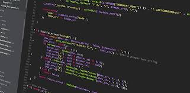

>Informacion:
Aprendemos los conceptos básicos de programación en Java, como tipos de datos, estructuras y la idea de programación orientada a objetos. Nos sumergimos en el mundo de las aplicaciones web, utilizando Spring Boot, un framework muy popular. Aprenderemos a crear proyectos web, manejar peticiones y diseñar interfaces con HTML y CSS.
Profesores (teoricas y practicas)
| TEORIA | PRACTICA | PRACTICA | PRACTICA |
|---|---|---|---|
| Ariel Vega | Carolina Apaza | Juan Carlos Rodriguez | Gustavo Sosa |

>Horarios por Comision
- Practica: Lunes (18:00 a 21:00)
- Teoria: Miercoles (18:00 a 21:00)
- Practica: Jueves (15:00 a 17:00)
- Practica: Viernes (18:00 a 21:00)
UNIDAD I: Lenguaje Java
Tipos de datos primitivos y complejos. Estructuras de datos. Operadores. Uso de Strings, Arreglos y Colecciones. Conceptos generales de la Programación Orientada a Objetos. Clases y objetos: Definición y Ejemplos.
UNIDAD II: Introducción a Spring Boot
Arquitectura de aplicaciones Web. Herramientas necesarias. ¿Qué es un Framework? Evolución de Spring. Módulos disponibles. Arquitectura de una aplicación con Spring. Creación de proyectos con Spring Boot en un IDE. Concepto de Controladores. Gestión de peticiones con RequestMapping. Introducción a HTML. Estructura de un documento HTML. Introducción a CSS. Creación de un sitio Web HTML.

UNIDAD III: Gestión de Dependencias y Versionamiento
Gestión de Proyectos mediante un sistema de control de versionamiento. Git: tareas de versionamiento con Git. Integración de Git con un IDE. Maven: descripción y utilidad. Descripción de la estructura de un proyecto Maven. Gestión de dependencias, repositorio Maven. Uso de arquetipos Maven. Spring Boot y Maven.

UNIDAD IV: Spring Boot MVC
Thymeleaf como motor de templates. Creación de un proyecto MVC con Spring Boot y thymeleaf. Configuración de propiedades mediante el fichero properties o yml. Introducción a Bootstrap: concepto e implementación de componentes. Navbar. Grillas con Bootstrap. Cards. Buttons. Breadscrumb.

UNIDAD V: Clases de negocio
Creación de clases de negocio. Clases de Servicio. Concepto de Inyección de dependencias. Vinculación entre clases de negocio con Servicios. Agregar objetos al modelo (Model). Renderizado de la UI con Thymeleaf.
UNIDAD VI: Persistencia de Objetos
Conceptos básicos de persistencia de objetos. Introducción a JPA. Conexión a un Motor de Base de Datos. Configuración de JPA con Spring Boot. CrudRepository, JpaRepository, Query Methods, Relaciones. Sistema de trazas: configuración con Spring Boot.
UNIDAD VII: Manejo de formularios
Gestión de eventos. Búsquedas. CRUD de clases de negocio. Operaciones de negocio. Uso de @Query para consultas personalizadas. Integración con componentes Bootstrap y thymeleaf. Integración de conceptos en una aplicación robusta.